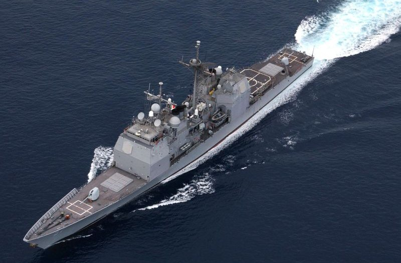
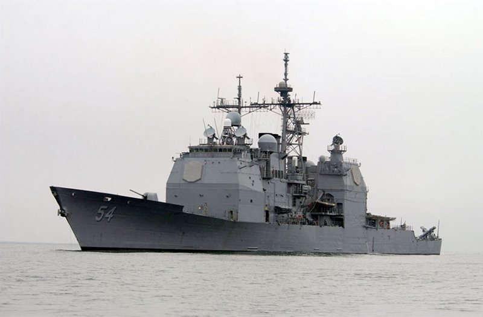
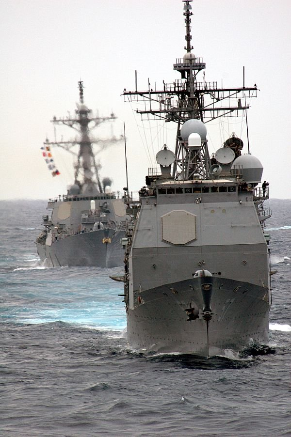
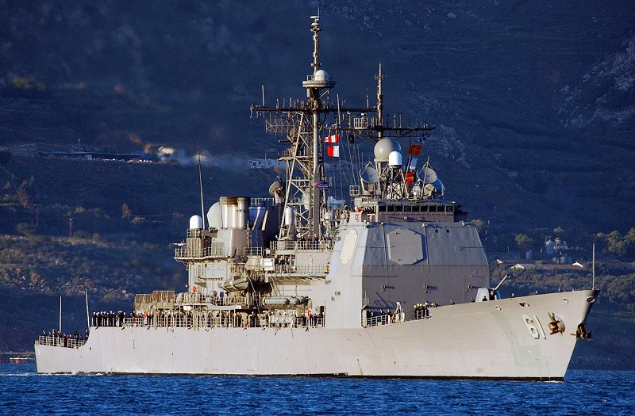
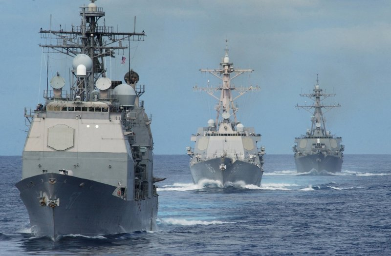
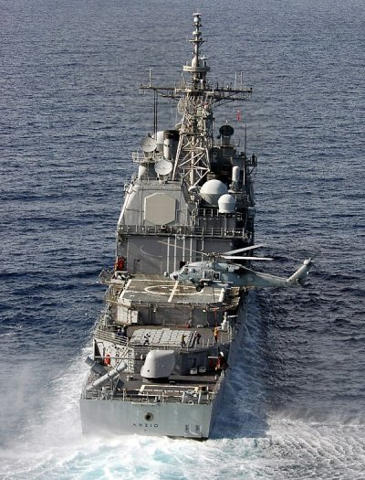
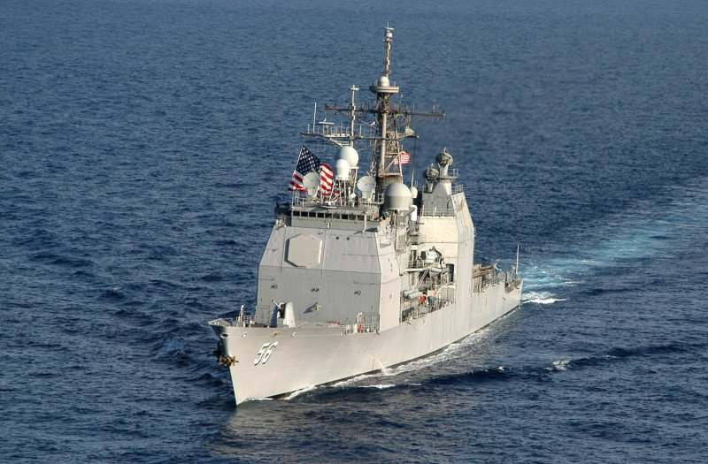
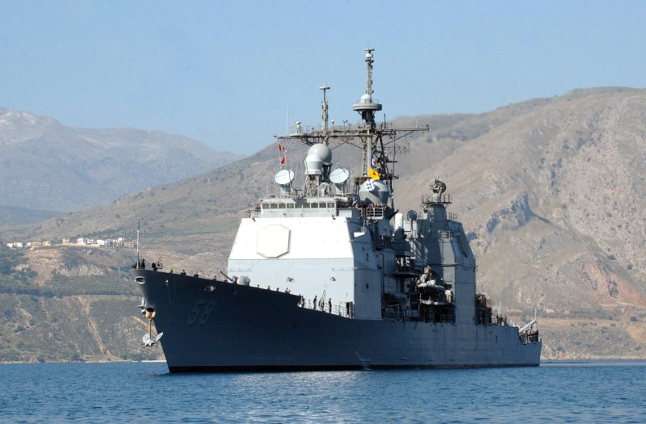

UNITED STATES TICONDEROGA CLASS CG LAST UPDATE: June 6, 2012     
|
| SPECIFICATIONS | PHOTOGRAPHS (Click on the pictures for an enlarged photo) |
 Designation: CG Length: 567 ft (173m) Beam: 55 ft (17m) Draft: 33 ft (10m) Displace (Full Load): 9,950 tons Propulsion: 4 GE LM2500, Gas Turbines; two shafts Speed: 30+ knots Range: 6,000 nautical miles (20 knots) Crew: 364 Helicopter(s): 2 SH-60 Seahawk Sensors: - AN/SPY-1B(v) Radar - AN/SQQ-89 Sonar Suite - AN/SQQ-28v LAMPS III Armament: - 64 cell Mk-41 VLS For SM-2, Tomahawk, ASROC - 63 cell Mk-41 VLS Aft SM-2, Tomahawk, ASROC - 8 X Harpoon missiles - 2 X 127mm MK-45 DP Gun - 2 X 20mm Phalanx CIWS - 6 X Mk-46 LW Torpedoes Ships in class: 22 USS Bunker Hill (CG 52), San Diego, CAIn the 1970s the United States Navy identified the need for a very strong surface combatant to act as the guardian of aircraft carriers and other highvalue assetts, particularly protecting them against aircraft and missile attacks. During the cold-war, it was anticpated that any major hostilities would result in regimental level attacks against US Navy Carrier Strike Groups involving scores of agressor aircraft and potentially hundreds of missiles. It was feared that current radar and battle management systems of that time would be overloaded by such attacks, placing the carrier at risk. The resulting solution was a Phased Array Radar based, high-speed battle management computing system that could identify, track, acquire and engage many targets simultaneously using layered defense techniques. The system would also be capable of data linking to other vessels which would be outfitted to be managed by the resulting vessel. The vessel coming out of this development was the Ticonderoga class guided missile cruisers, which were built on a basic Spruance class guided missile destroyer frame. The resulting battle management system was ultimately labeled the AEGIS system. The initial five vessels addressing this need and using the system developed employed dual-arm missile launchers with standard missile magazines beneath decks. While the system could launch more missiles, faster, than other vessels of the time, and while it could acquire, track and engage more targets as well, the twin arm launchers were simply not fast enough to address the type of saturation attacks expected. Beginnning with the sixth vessel, the USS Bunker Hill, CG 52, new vertical launch systems (VLS) replaced the twin-arm launchers, providing 64 cells fore and aft, which could match the fire rate with the acquisition and targeting rate of the AEGIS system. The USS Bunker Hill was commissioned in 1986, and twenty-one more vessles to this standard have been built and commissioned since. Ticonderoga class guided missile crusiers are the most heavily armed surface combatants in the US Navy arsenal, and the most capable. They are true multi-role vessels fully capable in the anti-air, anti-submarine, or anti-surface combat roles. Utilizing their Land-Attack Cruise Missile cspabilities, they are also very capable in the fire support role as well. These vessels act principally as escorts to US Navy super carriers, but can perform just as well in escorting amphibious assault groups, or with surface action groups (SAGs). These cruisers have significant battle management and control facilities and can also act as flagships for any group that they are involved with. They were desinged to operate in a high density, multi-threat environement, and they are more fully suited for that role than any other surface combatant in the world at the current time. This is due to the level of continuosly updated technology employed on the vessels, as well as (and equally so) due to the profiency of the crews, the training regiments that have been developed for them in all areas, and the policies and procedures developed from decades of at sea experience that have honed these vessels into the well oiled fighting mechanisms they are. |
        |


|
Jeff Head is a member of the US Naval Insitute who has many years experience in the power, defense, and computer industries. He currently works for the federal government helping maintain regional infrastructure. He is the author of a self-published military techno-thriller called, "Dragon's Fury," that projects a fictional third world war arising out of current events. Learn more about that series by clicking on the picture of the novel cover below:
 DRAGON'S FURY-World War against America and the West |
JEFFHEAD.COM Hit Counter

Jeff Head's Naval Sites Hit Counter